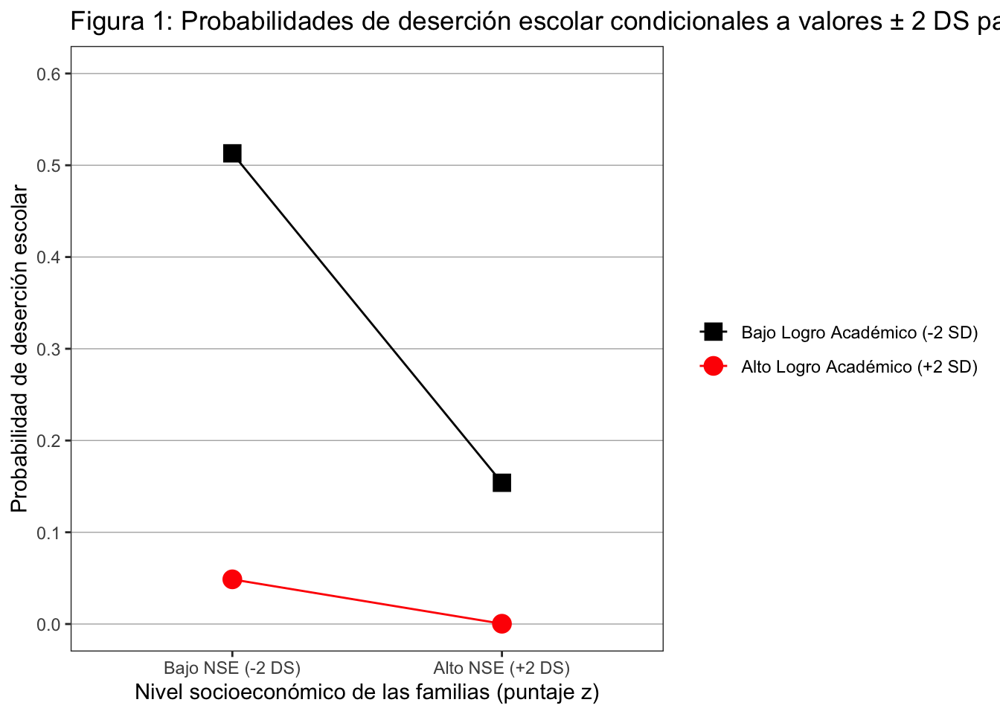
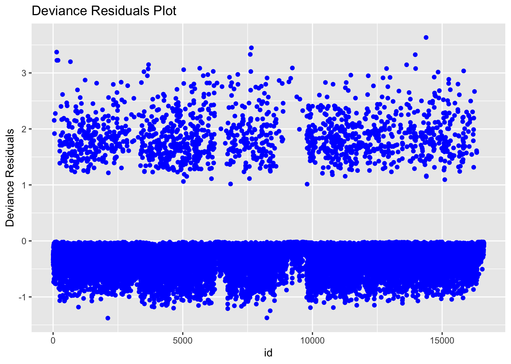

Descripción de resultados empleando datos presentes en Osborne (2012)
Author
https://dacarras.github.io/
Modified
October 29, 2024
Resumen
La siguiente guía produce todos los pasos empleando R para abrir los datos, preparar los datos, ajustar modelos de regresión logística, y describir los resultados encontrados.
Este documento incluye diferentes secciones donde se ilustran los diferentes pasos que se pueden emplear para producir los resultados.
Para dirigirse específicamente a la descripción de resultados, hacer click aqui.
Introducción
El presente documento ilustra cómo describir resulados de regresión logística, empleando los datos y resultados presentes en Osborne (2012):
Osborne, J. W. (2012). Logits and tigers and bears , oh my! A brief look at the simple math of logistic regression and how it can improve dissemination of results. Practical Assessment, Research and Evaluation, 17(June 2012), pp. 1–10.
En el articulo de Osborne (2012) se emplean datos del estudio NELS88 (https://nces.ed.gov/surveys/nels88/) de 1988, en el cual se siguen a estudiantes de 8vo grado (14 años aproximadamente), hasta el momento de graduación. Y con estos datos se distingue entre estudiantes que completan sus estudios y se graduan, en contraste a los estudiantes que interrumpen su trayectoria escolar. En resumen, la variable de respuesta, o variable dependiente, que se emplea se llama dropout. En esta se codifica como cero a los estudiantes que se graduan (i.e., completan la secundaria), y como uno a los estudiantes que interrumpen su trayectoria escolar.
Los datos que se emplean en la present guía, pueden ser obtenidos empleando el siguiente link:
Para describir los resultados, se siguen cómo guía a las recomendaciones presentes en Huck (2012), O’Connell et al. (2019), y las observaciones Niu (2020), a la pra´ctica del reporte de resultados encontrados en la literatura de la investigación educacional.
Flujo de trabajo
Abrir los datos
Preparar los datos
Ajustar Modelos
Extraer indicadores de ajuste
Crear tablas de resultados
Crear figuras de resultados
Descripcion de resultados
Para los puntos 1 a 6, vamos a re-utilizar código desarollado en la guia anterior.
1. Abrir datos
Primero procedemos a abrir los datos desde web link.
Código 1. Abrir los datos desde URL
# crear objeto con la ubicación de los datosfile_url <-'https://www.dropbox.com/s/s1y0qkn8vuebqvr/NELS_data_pulll_2.SAV?dl=1'## abrir los datos empleando havendata_nels <- haven::read_sav(file_url)# inspeccionar datos cargados en Rdplyr::glimpse(data_nels)
Vamos a crear un objeto llamado data_model, para alojar los datos en los que vamos a encontrar las observaciones que estaremos analizando. Este objeto es una copia de los datos originales, la cual solo contiene los datos que vamos a analizar. Este paso, es solo una buena práctica de analisis de datos la cual nos asegura que siempre podamos volver a nuestros datos originales, en caso de que quisieramos revocar un cambio realizado. Además, emplearemos nombres más cortos para las variables en uso (i.e., de unos 4 caracteres), y nombres homogeneos en miníscula, para que sea más facil escribir el código que emplearemos para producir los resultados.
Código 2. preparar datos
# crear datos analizableslibrary(dplyr)data_model <- data_nels %>%# crear variable de respuestamutate(drop = dropout) %>%# covariablesmutate(zach = ZACH) %>%mutate(zses = zses) %>%mutate(int = zses*zach) %>%# selección de variables en uso dplyr::select(drop, zach, zses, int)
Nota
En R los nombres de objetos case sensitive. Lo anterior quiere decir que a pesar de que dos palabras digan lo mismo, para R son objetos diferentes, si se diferencian por el uso de minúsculas y mayúsculas. De esta forma variable, Variable, y VariaBle son todos objetos diferentes. El presente código se apega al (“tidyerse style”)[https://style.tidyverse.org/index.html]. En este, todo lo de código se escribe con minúsculas, y se emplean _ en caso de querer unir palabras.
Para los modelos que vamos a ajustar, solo vamos a emplear 4 variables:
Variable dependiente o de respuesta.
drop
0 = termina la secundaria
1 = no concluye la educación secundaría
Variables independientes
zach
0 = media
1 = desviación estandar
Variable estandarizada
Mayor valor, mayor desempeño académico
Valor compuesto del desempeño escolar de 8vo grado
zses
0 = media
1 = desviación estandar
Variable estandarizada
Mayor valor, mayor desempeño nivel socioeconómico de la familia de los estudiantes.
SES es una variable continua, generada como el compuesto de la educación de madre y padre, la ocupación de ambos padres, y el ingreso del hogar (ver NCES, 2018, p5)
int
es el multiplo de zses y de zach, de tal forma que zses*zach.
Este término nos sirve para evaluar la posible interacción entre nivel socioeconómico, y desempeño académico de los estudiantes, en relación a la deserción escolar (dropout).
3. Ajustar Modelos
En el siguiente código vamos a ajustar todos los modelos posibles, de forma incremental. Primero incluimos las covariables por si solas, y luego las variables juntas, y luego incluimos el término de interacción.
Código 3.1 ajustar modelos
# ajustar modelosm00 <-glm(drop ~1, data = data_model, family ='binomial')m01 <-glm(drop ~1+ zach, data = data_model, family ='binomial')m02 <-glm(drop ~1+ zses, data = data_model, family ='binomial')m03 <-glm(drop ~1+ zach + zses, data = data_model, family ='binomial')m04 <-glm(drop ~1+ zach + zses + int, data = data_model, family ='binomial')# sequencia completa de modelostexreg::screenreg(list(m00, m01, m02, m03, m04), single.row =FALSE )
En el paso anterior, ajustamos todos los modelos posibles. Esto nos da una vista panóramica de la relación de cada una de las variables con respecto a la variable de respuesta. El paso anterior, nos puede dar un diagnóstico rápido si las variables presentan varianza compartida, y si pudiera existir problemas de colinealidad (ver Anexos: Colinealidad).
Ahora, solo ajustaremos los modelos que vamos a emplear para la descripción de resultados.
Código 3.2 ajustar modelos seleccionados.
# sequencia seleccionada de modelostexreg::screenreg(list(m00, m03, m04), single.row =FALSE )
Para obtener los odds ratio, vamos a emplear dos librerias. Una de ellas es la librería blorr, y la otra es la librería broom. blorr es una librería para ajustar modelos de regresión logística, que posee diferentes funciones para obtener diferentes aspectos de interés, como relaciones bivariadas, odds ratio, indicadores de ajuste, entre otros aspectos. broom, por su parte, es una librería general para extraer coeficientes e indicadores de ajuste, en formato tabla desde varios modelos en R.
Con los códigos siguientes, vamos a obtener los odds ratio implicados por el modelo ajustado. Recordemos que los odds ratio son solo los coeficientes exponenienciados. Es decir:
\(\text{odds ratio }= exp(\hat{\beta}_{1-n})\)
Código 3.3 odds ratio.
# obtener odds ratio con blorrblorr::blr_regress(m04, odd_conf_limit =TRUE)
Model Overview
-------------------------------------------------------------------------
Data Set Resp Var Obs. Df. Model Df. Residual Convergence
-------------------------------------------------------------------------
data drop 16610 16609 16606 TRUE
-------------------------------------------------------------------------
Response Summary
--------------------------------------------------------
Outcome Frequency Outcome Frequency
--------------------------------------------------------
0 15133 1 1477
--------------------------------------------------------
Maximum Likelihood Estimates
------------------------------------------------------------------
Parameter DF Estimate Std. Error z value Pr(>|z|)
------------------------------------------------------------------
(Intercept) 1 -3.1743 0.0540 -58.8165 0.0000
zach 1 -1.1744 0.0548 -21.4362 0.0000
zses 1 -0.8570 0.0540 -15.8635 0.0000
int 1 -0.2093 0.0514 -4.0744 0.0000
------------------------------------------------------------------
Odds Ratio Estimates
----------------------------------------------------------
Effects Estimate 95% Wald Conf. Limit
----------------------------------------------------------
zach 0.3090 0.2770 0.3434
zses 0.4244 0.3814 0.4713
int 0.8111 0.7326 0.8960
----------------------------------------------------------
Association of Predicted Probabilities and Observed Responses
---------------------------------------------------------------
% Concordant 0.8200 Somers' D 0.6400
% Discordant 0.1800 Gamma 0.6400
% Tied 0.0000 Tau-a 0.1037
Pairs 22351441 c 0.8200
---------------------------------------------------------------
# obtener odds ratio con broombroom::tidy(m04, conf.int =TRUE, exponentiate =TRUE)
Indicadores de calidad de la clasificación del modelo
En estos indicadores comúnmente se cuenta la cantidad de \(Pr(y=1)\) de \(Pr(y=0)\) sobre la cantidad de observaciones. Con estos se producen indicadores de sensibilidad, especificidad y precisión de clasificación.
Una forma de obtener estos indicadores, es mediante una tabla de “confusión” (i.e., confusion matrix). Esta es una tabla de contigencia que cruza los valores observados de \(y\), en contraste a los valores esperados de y (\(\hat{y}\)).
A continuación revisaremos como se construyen los indicadores de likelihood (LRT), McFadden’s R^2, y Efron R^2, y las tablas de clasificación.
Likelihood Ratio Test (LRT)
La formula de Likelihood ratio es:
\(\chi^2_{diff} = -2(LL_{0} - LL{1})\)
Donde,
\(LL_{1}\) = es la loglikelihood del modelo de interés
\(LL_{0}\) = es la loglikelihood del modelo nulo
\(\chi^2_{diff}\) = es un valor de \(\chi^2\).
Lo que nos entrega esta prueba, es una medida global de discrepancia entre la devianza del modelo nulo, en contraste al modelo de interés. Cuando esta diferencia es muy pequeña, condicional a los grado de libertad, afirmamos que el modelo de interés produce devianzas muy similares a las del modelo que solo contiene al porcentaje de la variable de interés (i.e., el análago del promedio de la regresión lineal). En cambio, cuando esta discrepancia es superior a lo esperado en la distribución de \(\chi^2\), entonces afirmamos que el modelo ajusta de mejor manera a los datos.
Para obtener este indicador, podemos aplicar el siguiente código.
Código 4.1. Likelihood ratio test
# Likelihood ratio testanova(m00, m04, test="LRT")
Analysis of Deviance Table
Model 1: drop ~ 1
Model 2: drop ~ 1 + zach + zses + int
Resid. Df Resid. Dev Df Deviance Pr(>Chi)
1 16609 9967.2
2 16606 8045.5 3 1921.7 < 2.2e-16 ***
---
Signif. codes: 0 '***' 0.001 '**' 0.01 '*' 0.05 '.' 0.1 ' ' 1
Importante
Las pruebas de Likelihood ratio test son muy importantes, porque son aplicables a cualquier modelo estadístico basado en maxima verosimilitud (i.e., maximum likelihood). Estas pueden ser aplicadas sobre diferentes modelos tales como: regresion lineal, modelos multinivel, modelos de regresion logística, modelos generalizados, confirmatory factor analysis, modelos de respuesta al item, entre otros modelos estimados con maximum likelihood.
\(LL_{1}\) = es la loglikelihood del modelo de interés
\(LL_{0}\) = es la loglikelihood del modelo nulo
En esta fórmula se comparamos la máxima verosimilitud no atrribuible al modelo, con la máxima verosimilitud del modelo nulo. En otras palabras, estamos comparando que proporción de máxima verosimilitud es capaz de explicar el modelo que hemos ajustado, en contraste a toda la máxima verosimilitud que puede explicar solo el “promedio” o porcentaje de respuesta sobre los datos observados.
Este indicador, no es precisamente una medida de proporción de varianza explicada, pero se comporta de igual manera. Lo anterior, en el sentido de que a medida que se acerca 1, implica un modelo que ajusta bien a los datos; y a medida que se aleja de 1, implica un modelo que predice a los datos observados en menor medida.
Para obtener el McFadden R^2, vamos a emplear un método manual, y otro empleando a la librería perfomance (Lüdecke, et al., 2021).
Código 4.2. McFadden R^2
# McFadden R2 via computación manualll_0 <-as.numeric(logLik(m00))ll_1 <-as.numeric(logLik(m04))McFadden_r2 <-1- ll_1/ll_0McFadden_r2
[1] 0.1928037
# McFadden via library(performance)performance::r2_mcfadden(m04)
# R2 for Generalized Linear Regression
R2: 0.193
adj. R2: 0.193
Este indicador ajuste, puede ser visto como un McFadden \(R^2\) corregido por la cantidad de parámetros que posee el modelo ajustado. En estudios de simulaciones, este indicador es menos sensible al tamaño de la muestra, la cantidad de covariables del modelo, y de la cantidad de categorias presentes en la variable de respuesta (i.e., en modelos de más de dos categorías) (Hemmert et al., 2018). Por esta última razón, se lo considera un indicador más ventajoso en contraste a otros indicadores de pseudo \(R^2\) para diferentes modelos logit.
Efron’s \(R^2\)
En contraste, Efron’s R^2 sigue la racionalidad del R^2 de la regresión lineal. La formula de este indicador, es la siguiente:
# Efron R^2 via library(perfomance)performance::r2_efron(m04)
[1] 0.1276261
McKelvey & Zavoina Pseudo \(R^2\)
McKelvey & Zavoina Pseudo R^2 puede ser atractivo, porque sigue la lógica de producir una proporción de varianza explicada. En esta aproximación, se asumen que podemos realizar la siguiente descomposición:
\[S_{T}^2 = S_{R}^2 + S_{E}^2\]
Donde,
\(S_{T}^2\) es la suma de cuadrados totales (i.e., la varianza total). \(S_{E}^2\) es la suma de cuadrados generada por el modelo \(S_{R}^2\) es la suma de cuadrados del error
Para el caso de los modelos de regresión logística la varianza residual de \(y\) es fija y se expresa con el siguiente término \(\pi^2/3\).
De esta forma el \(R^2\) de McKelvey & Zavoina (1975) puede ser expresado para la regresión logística de la siguiente forma:
# McKelvey & Zavoina Pseudo R^2 via computación manual (método 1)## términosy_hat <- stats::predict(m04, type ="link")bar_y_hat <-mean(y_hat)n <-nrow(data_model)sigma_2 <- pi^2/3# suma de cuadrados del modelosse <-sum((y_hat - bar_y_hat)^2)# suma de cuadrados totakessst <- sse + n * sigma_2mzr2_m1 <- sse / sstmzr2_m1
[1] 0.4982506
# McKelvey & Zavoina Pseudo R^2 via computación manual (método 2)# formula para obetener varianza de la población (y no de la muestra)var_pop <-function(x){n <-length(x)var_pop <-var(x) * (n -1)/nreturn(var_pop)}var_star_y <-var_pop(y_hat)var_star_t <-var_pop(y_hat) + (pi^2)/3mzr2_m2 <- var_star_y/var_star_tmzr2_m2
# Comparación de métodos de calculos empleadosdata.frame(method =c('via SSE', 'via Varianza', 'performance::r2_mckelvey'),MZ_R2 =c(mzr2_m1, mzr2_m2, mzr2_m3)) %>%knitr::kable(., digits =8)
method
MZ_R2
via SSE
0.4982506
via Varianza
0.4982506
performance::r2_mckelvey
0.4982506
Indicadores de ajuste
Una forma de obtener cada uno de estos indicadores de ajuste con una sola función es empleando a la función blorr::blr_model_fit_stats(). Además, podemos emplear la función blorr::blr_multi_model_fit_stats, con la cual podemos comparar los indicadores de ajuste de varios modelos. Finalmente, empleando a broom::glance() podemos obtener algunos de los indicadores que se producen con summary(model), pero en formato tabla, lo cual nos puede servir para extraer estadísticos particulares del modelo (e.g., loglikelihood, deviance, AIC, BIC).
Código 4.6. Indicadores de ajuste
# indicadores de ajuste con blorrblorr::blr_model_fit_stats(m04)
Si comparamos los diferentes indicadores de pseudo \(R^2\) empleados en regresión logística podemos ver que estos difieren en tamaño de manera importante (ver tabla siguiente.
Código para obtener cada uno de los pseudo R^2
data.frame(pseudo_r2 =c('Effron', 'McFadden', 'Horowitz', 'McKelvey & Zavoina'),estimate =c( as.numeric(performance::r2_efron(m04)),as.numeric(performance::r2_mcfadden(m04)$R2),horowitz_r2,as.numeric(performance::r2_mckelvey(m04))),racionalidad =c('Reducción de predichos','Reducción de devianza','Reducción de devianza, corregido por la cantidad de parámetros','Reducción de varianza latente')) %>%arrange(estimate) %>%knitr::kable(., digits =2, caption ='Tabla 1: comparación de R^2 para modelo `m04`')
Tabla 1: comparación de R^2 para modelo m04
pseudo_r2
estimate
racionalidad
Effron
0.13
Reducción de predichos
Horowitz
0.19
Reducción de devianza, corregido por la cantidad de parámetros
McFadden
0.19
Reducción de devianza
McKelvey & Zavoina
0.50
Reducción de varianza latente
No existe un consenso transversal en la literatura, respecto a cual indicador \(R^2\) es más adecuado (O’Connel et al, 2019). No obstante, Menard (2000) plantea que McFadden \(R^2\) puede ser preferible por dos razones: a) este es un indicador que puede ser interpretado como una medida de reducción de error, y b) que este indicador es insensible a la tasa de prevalencia del evento de interés, es decir el \(Pr(y = 1)\). Por su parte Hemmert et al. (2018), recomienda al indicador de pseudo de R^2 de Horowitz (1982), debido a que este indicador es menos sensible al tamaño muestral, y la distribución de categorias de la variable de respuesta.
No obstante, si el uso de estos indicadores, es solo comparación entre modelos ajustados sobre los mismos datos, y sobre la misma variable dependiente, cualquiera de estos indicadores debiera al propósito de ayudar a la selección de modelos.
O’Connel et al. (2019) por su parte, plantea que el indicador McFadden \(R^2\) es uno de los indicadores más intuitivos como medida de mejora de ajuste, dado el modelo de interés.
De todas formas, lo más importante a tener en cuenta, es el propósito para el cual se quiera emplear uno de estos indicadores, e indicar claramente cual es el indicador que esta siendo empleado en el reporte de resultados del manuscrito (Menard, 2000; Hemmert et al., 2018). En otras palabras, la recomendación a seguir es siempre reportar el ajuste del modelo, indicando explícitamente cuál de estos indicadores es el reportado.
Tip
En el reporte de resultado de regresión logística, en el primer párrafo de descripción de resultados sobre el ajuste de modelo, se requiere indicar claramente el indicador de pseudo \(R^2\) que esta siendo reportado.
Calidad de la clasificación
Uno de los indicadores más sencillos de calidad de clasificación es la proporción de casos predichos en contraste a la cantidad de observaciones. Este indicador puede ser obtenido de variadas maneras. La forma más sencilla, consiste en producir una tabla de contingencia entre los valores predichos, y los valores observados. Se suman los valores correctamente predichos de cada categoria, y se dividen por la cantidad de observaciones.
Coincide, que para el caso de regresión logistica, este es el mismo indicador de cantidad de clasificaciones correctas o Count\(R^2\).
Otro indicador de clasificación, es el indicador \(tau_{p}\) Menard (2000, 2001). Este es un indicador, basado en clasificaciones basadas en probabilidades no simétricas (Ma & Redmond, 1995). Este indicador consiste en la proporción de clasificaciones correctas ajustando por las probabilidades a priori. Es decir, la tasa de prevalencia del evento, previo a que tengamos información de las covariables. Este segundo término se obtiene como las probabilidades marginales de la distribución de referencia (i.e., el porcentaje del evento de interes, obtenido desde la variable e respuesta). En la literatura de clasificación este indicador tambien se lo conoce como Klecka’s \(\tau\) (Klecka, 1980). De forma análoga, tambien es posible producir \(\tau_{e}\), el cual ajusta las clasificaciones empleando una clasificación al azar. La cual, en el caso del modelo de regresión logística es equivalente a .5 (1/cantidad de valores posibles).
A continuación, incluimos código para producir a los indicadores de:
count \(R^2\) = Porcentaje de clasificacion correcta count_r2
Accuracy = Porcentaje de clasificacion correcta, sobre el total accuracy
\(\tau_{p}\) = Porcentaje de classifiación correcta, ajustado por la prevalencia (\(\tau_{p}\))
\(\tau_{e}\) = Porcentaje de classifiación correcta, ajustado por azar (\(\tau_{e}\))
\(\lambda_{p}\) Porcentaje de classifiación correcta, ajustado por categoria modal (\(\lambda_{p}\))
Importante
Es importante señalar que los indicadores de clasificación no son calculados por defecto por diferentes paquetes estadísticos. Y por tanto, hay menos acuerdo en la literatura respecto a cual de estos indicadores es más adecuado reportar (O’Connel et al, 2019). Menard (2000) recomienda al indicador de \(\tau_{p}\), y al count \(R^2\) o porcentaje de clasificación correctas por sobre el total. En esta guia, emplearemos este indicador para crear el reporte de resultados.
## tau_e Ma & Redmond (1995)p_o <-sum(f_ii)/n_obsp_re <-0.5# Note: clasification by chancetau_e <- (p_o - p_re)/(1-p_re)tau_e
[1] 0.8222757
## tau p Ma & Redmond (1995)p_o <-sum(f_ii)/n_obsp_rp <-mean(y_obs) # Note: marginal distribution of the reference datatau_p <- (p_o - p_rp)/(1-p_rp)tau_p
Para producir una tabla general de resultados vamos a emplear dos estrategias. Una de ellas, consiste en emplear tablas de que producen librerias. En este caso, vamos a emplear las tablas que produce las funciones texreg::screenreg(), blorr::blr_regress(), y broom::tidy(). Luego, como segunda estrategia, vamos a crear una tabla con los contenidos que queremos que contenga la tabla. Comúnmente, una tabla de resultados de regresión logística posee: - los nombres de la covariables - los coeficientes de regresión logística - los errores estandares de los coeficientes - los resultados de la prueba estadística sobre los coeficientes - incluyendo o no, al resultado de esta prueba - los valores p, o en su reemplazo a los p valor resumidos empleando * - los coeficientes en odds ratio.
Con los siguientes códigos vamos a producir la tabla general.
Código 5.1. tabla de resultados
# metodo 1: screenregtexreg::screenreg(list(m04), single.row =TRUE )
===================================
Model 1
-----------------------------------
(Intercept) -3.17 (0.05) ***
zach -1.17 (0.05) ***
zses -0.86 (0.05) ***
int -0.21 (0.05) ***
-----------------------------------
AIC 8053.52
BIC 8084.39
Log Likelihood -4022.76
Deviance 8045.52
Num. obs. 16610
===================================
*** p < 0.001; ** p < 0.01; * p < 0.05
# metodo 2: blorrblorr::blr_regress(m04, odd_conf_limit =TRUE)
Model Overview
-------------------------------------------------------------------------
Data Set Resp Var Obs. Df. Model Df. Residual Convergence
-------------------------------------------------------------------------
data drop 16610 16609 16606 TRUE
-------------------------------------------------------------------------
Response Summary
--------------------------------------------------------
Outcome Frequency Outcome Frequency
--------------------------------------------------------
0 15133 1 1477
--------------------------------------------------------
Maximum Likelihood Estimates
------------------------------------------------------------------
Parameter DF Estimate Std. Error z value Pr(>|z|)
------------------------------------------------------------------
(Intercept) 1 -3.1743 0.0540 -58.8165 0.0000
zach 1 -1.1744 0.0548 -21.4362 0.0000
zses 1 -0.8570 0.0540 -15.8635 0.0000
int 1 -0.2093 0.0514 -4.0744 0.0000
------------------------------------------------------------------
Odds Ratio Estimates
----------------------------------------------------------
Effects Estimate 95% Wald Conf. Limit
----------------------------------------------------------
zach 0.3090 0.2770 0.3434
zses 0.4244 0.3814 0.4713
int 0.8111 0.7326 0.8960
----------------------------------------------------------
Association of Predicted Probabilities and Observed Responses
---------------------------------------------------------------
% Concordant 0.8200 Somers' D 0.6400
% Discordant 0.1800 Gamma 0.6400
% Tied 0.0000 Tau-a 0.1037
Pairs 22351441 c 0.8200
---------------------------------------------------------------
# metodo 3: broom::tidy()broom::tidy(m04) %>%mutate(OR =exp(estimate)) %>%knitr::kable(., digits =3)
term
estimate
std.error
statistic
p.value
OR
(Intercept)
-3.174
0.054
-58.817
0
0.042
zach
-1.174
0.055
-21.436
0
0.309
zses
-0.857
0.054
-15.863
0
0.424
int
-0.209
0.051
-4.074
0
0.811
El código siguiente emplea a los resultados parciales que genera broom::tidy(). La ventaja que posee esta fucnión consiste en que el producto de su aplicación es una tabla de resultados, o data_frame. Y como tal, nos permite realizar calculos sobre ella. Empleando esta última propiedad, cambiamos el formato de los resultados entregados, de modo que la tabla final se asemeje a los contenidos de una tabla de resultados de formato de manuscrito.
## guardar tabla a exceltabla_1 %>%openxlsx::write.xlsx(., 'tabla_1_resultados.xlsx', overwrite =TRUE)
6. Figura
Empleamos el siguiente código para producir una figura que emplea a las probabilidades condicionales, generadas con los resultados del modelo a ± 2 DS para nivel socioeconómico de las familias, y para logro académico de los estudiantes.
Nota
El código siguiente es una versión adaptada del código que empleamos en la guía anterior (ver link). En este caso, empleamos labels en castellano; mientras que la guía anterior nos enfocamos en reproducir los pasos empleados por Osborne (2012).
Código 6. producir figura de resultados esperados
# valores de interéslo_ach <--2hi_ach <-2lo_ses <--2hi_ses <-2# coeficientes en logits del modelob0 <--3.174b1 <--1.174b2 <--0.857b3 <--0.209# logits esperados a cada conjunto de valores de interése_logit_1 <- b0 + b1*(lo_ach) + b2*(lo_ses) + b3*(lo_ach*lo_ses)e_logit_2 <- b0 + b1*(lo_ach) + b2*(hi_ses) + b3*(lo_ach*hi_ses)e_logit_3 <- b0 + b1*(hi_ach) + b2*(lo_ses) + b3*(hi_ach*lo_ses)e_logit_4 <- b0 + b1*(hi_ach) + b2*(hi_ses) + b3*(hi_ach*hi_ses)# creamos tabla básica con los logits esperadosdata_plot <-data.frame( x_var =c('Bajo NSE (-2 DS)','Alto NSE (+2 DS)','Bajo NSE (-2 DS)','Alto NSE (+2 DS)'), y_var =c(e_logit_1, e_logit_2, e_logit_3, e_logit_4),group =c('Bajo Logro Académico (-2 SD)', 'Bajo Logro Académico (-2 SD)', 'Alto Logro Académico (+2 SD)','Alto Logro Académico (+2 SD)')) # reordenamos a los valores del factor sesdata_plot_figure_1 <- data_plot %>%mutate(ses_grp =as.factor(x_var)) %>%mutate(ses_grp = forcats::fct_relevel(ses_grp,c('Bajo NSE (-2 DS)', 'Alto NSE (+2 DS)') )) %>%mutate(ach_grp =as.factor(group)) %>%mutate(ach_grp = forcats::fct_relevel(ach_grp,c('Bajo Logro Académico (-2 SD)', 'Alto Logro Académico (+2 SD)') )) %>%mutate(expected_prob =1/(1+(exp(-y_var)))) # creamos la figura 1library(ggplot2)figure_1 <-ggplot(data_plot_figure_1, aes( x = ses_grp, y = expected_prob, group = ach_grp, color = ach_grp, shape = ach_grp )) +geom_line() +geom_point(size=4) +scale_color_manual( values =c( 'Alto Logro Académico (+2 SD)'='red', 'Bajo Logro Académico (-2 SD)'='black' )) +scale_shape_manual( values =c( 'Alto Logro Académico (+2 SD)'=19, 'Bajo Logro Académico (-2 SD)'=15 )) +xlab('Nivel socioeconómico de las familias (puntaje z)') +scale_y_continuous( name ='Probabilidad de deserción escolar', breaks =seq(0,1,.1), limits =c(0,.6) ) +theme_bw() +theme( legend.title =element_blank(), panel.grid.major.x =element_blank(), panel.grid.minor.y =element_blank(), panel.grid.major.y =element_line(linewidth = .25, colour ="grey70") ) +ggtitle('Figura 1: Probabilidades de deserción escolar condicionales a valores ± 2 DS para NSE y Logro académico') figure_1

7. Descripcion de resultados
Usualmente, la estructura de descripcion de resultados de un modelo lineal generalizado posee los siguientes componentes:
Un párrafo con la descripción del ajuste del modelo.
Se emplean estrategias de comparación de modelos entre sí para evaluar el ajuste global del modelo, mediante Likelihood ratio test.
Se pueden emplear indicadores de varianza explicada (e.g., McFadden \(R^2\))
Se emplean tambien indicadores de precision de clasificación (i.e., count \(R^2\))
Párrafos describiendo los resultados encontrados, segun las preguntas de investigación.
En general, los autores se centran los coeficientes que abordan sus preguntas de investigación.
Se emplean tablas y gráficos para ilustrar los resultados
Los autores emplean en general al menos una tabla, y a veces figuras de resultados para facilitar la lectura de sus resultados.
Nota
Para que resultados descritos tengan sentido esbozamos una introducción breve. Esta sigue la estructura de tres partes recomendada por Booth et al (2016). Esta introducción requiere incluir tres partes: una descripción del tópico, una descripción del problema, y una descripción de la propuesta. Emplearemos este formato de introducción de modo que los resultados descritos sean lo más realista posible, ya que es el problema de investigación lo que condiciona a como son descritos los resultados encontrados.
Introducción
El dropout escolar es un problema reconocido en términos de política pública para los paises. Es uno de los riesgo negativos más grandes en salud pública (Freudenberg et al., 2007), así como un conocido factor detrimental para la empleabilidad futura de las persoas (Solga, 2002). Este fenómeno interrumpe el proceso educativo del cual participan los estudiantes, y mientras más temprano ocurra, mayores son las consecuenci
Los indicadores de riesgo con mayor cobertura en el estudio de dropout escolar, es el desempeño académico de los estudiantes, y el nivel socioeconómico de las familias de los estudiantes. Sin embargo, una pregunta que posee menor cobertura en la literatura son los posibles efectos de interacción de estos factores. Esta pregunta es común que no sea abordada en estudios previos, debido a la falta de poder estadístico (e.g., Sommet, 2023). Mientras la evaluación de relaciones entre variables requiere de muestras de unos 100 casos, para la adecuada evaluación relaciones condicionales se puede requerir de muestras de hasta 16 veces el tamaño anterior (Gellman, 2008).
El presente estudio se sirve de una muestra de datos nacional de gran tamaño (n = 16610) para estudiar el rol del nivel socioeconómico de los estudiantes sobre el dropout escolar. En particular, queremos saber si este factor es un factor de riesgo para todos los estudiantes, y/o si es un factor de riesgo que posee mayores consecuencias para estudiantes de menor desempeño académico.
Método
[aqui iría la descripción de la muestra, las variables empleadas, y el tipo de modelo de estadístico empleado para producir los resultados empleados en la argumentación del artículo].
Resultados
Ajuste global. El modelo final, en contraste al modelo nulo presenta un mejor ajuste (LRT(3) = 1921.72, p < .001). Este modelo reduce el error del modelo nulo en cerca de 19% (McFadden Adj \(R^2\) = 0.19). El modelo clasifica de forma adecuada a 91% de las observaciones (count \(R^2\) = .01). Con estos resultados concluimos, que en forma global, el desempeño académico de los estudiantes en octavo grado, y los antecedentes socioeconómicos de las familias, son relevantes para entender la tasa de deserción escolar de los estudiantes secundarios.
Resultados. En terminos generales, se observa que entre los estudiantes incluidos en el estudios, se observa una tasa de deserción escolar de 8.89%.
Con los resultados obtenidos del modelo ajustado podemos indicar que los estudiantes con mayores logros académicos al inicio de la ventana de observación presentan menores chances de interrumpir su trayectoria escolar (b = -3.17 (0.05), p < .001, OR = .31). En términos relativos, esto indica que los estudiantes con 1 desviación estandar mayor de desempeño académico, tienen 3 veces más chances de concluir sus estudios de secundaria, que el resto de sus pares (1/OR = 3.23).
Por su parte, el nivel socioeconómico de las familias de los estudiantes tambien presenta una relación negativa con la deserción escolar (b = -1.17 (0.05), p < .001, OR = .42; 1/OR = 2.36). Estudiantes de familias con mayor nivel socioeconómico presentan mayores chances de completar sus estudios escolares. En terminos relativos, estudiantes a una desviación estándar de mayor nivel socioeconómico, presentan más del doble de chances de completar sus estudios escolares (1/OR = 2.36).
Código que genera a la Tabla 1 de resultados
# metodo 4: broom::tidy() y edición de campus## función para decinir 2 decimalesdecimales <-function (x, k) {format(round(x, k), nsmall = k)}## tabla con estimadostabla_1 <- broom::tidy(m04) %>%mutate(text =case_when(term =='(Intercept)'~'intercepto',term =='zach'~'logro académico (puntaje z)',term =='zses'~'nivel socioeconómico (puntaje z)',term =='int'~'interacción')) %>%mutate(e =decimales(estimate, 2)) %>%mutate(se =paste0('(', decimales(std.error, 2), ')')) %>%mutate(star =case_when(p.value < .001~'***',p.value < .01~'** ',p.value < .05~'* ',p.value >= .05~' ')) %>%mutate(odds_ratio =decimales(exp(estimate),2)) %>%mutate(reverse_odds_ratio =decimales(1/exp(estimate),2)) %>%mutate(odds_ratio =case_when(text =='intercepto'~'',text !='intercepto'~ odds_ratio)) %>%mutate(reverse_odds_ratio =case_when(text =='intercepto'~'',text !='intercepto'~ reverse_odds_ratio)) %>%dplyr::select(text, e, se, star, odds_ratio, reverse_odds_ratio)tabla_1 %>%knitr::kable(., digits =2, caption ='Tabla 1: resultados de regresión logística sobre el evento de deserción escolar')
Tabla 1: resultados de regresión logística sobre el evento de deserción escolar
text
e
se
star
odds_ratio
reverse_odds_ratio
intercepto
-3.17
(0.05)
***
logro académico (puntaje z)
-1.17
(0.05)
***
0.31
3.24
nivel socioeconómico (puntaje z)
-0.86
(0.05)
***
0.42
2.36
interacción
-0.21
(0.05)
***
0.81
1.23
Finalmente, observamos que estos dos factores, desempeño académico en 8vo grado, y nivel socioeconómico de las familias, son factores que interactúan entre sí (b = -0.21 (0.05), p < .001). Para ilustrar la dirección de estos resultados, vamos a producir probabilidades condicionales a -2 y 2 desviaciones estándar por sobre el promedio para desempeño académico, y nivel socioeconómico de las familias, e ilustraremos estos resultados con la Figura 1.
Código que genera a la Figura 1 para ilustrar la Interacción
# valores de interéslo_ach <--2hi_ach <-2lo_ses <--2hi_ses <-2# coeficientes en logits del modelob0 <--3.174b1 <--1.174b2 <--0.857b3 <--0.209# logits esperados a cada conjunto de valores de interése_logit_1 <- b0 + b1*(lo_ach) + b2*(lo_ses) + b3*(lo_ach*lo_ses)e_logit_2 <- b0 + b1*(lo_ach) + b2*(hi_ses) + b3*(lo_ach*hi_ses)e_logit_3 <- b0 + b1*(hi_ach) + b2*(lo_ses) + b3*(hi_ach*lo_ses)e_logit_4 <- b0 + b1*(hi_ach) + b2*(hi_ses) + b3*(hi_ach*hi_ses)# creamos tabla básica con los logits esperadosdata_plot <-data.frame( x_var =c('Bajo NSE (-2 DS)','Alto NSE (+2 DS)','Bajo NSE (-2 DS)','Alto NSE (+2 DS)'), y_var =c(e_logit_1, e_logit_2, e_logit_3, e_logit_4),group =c('Bajo Logro Académico (-2 SD)', 'Bajo Logro Académico (-2 SD)', 'Alto Logro Académico (+2 SD)','Alto Logro Académico (+2 SD)')) # reordenamos a los valores del factor sesdata_plot_figure_1 <- data_plot %>%mutate(ses_grp =as.factor(x_var)) %>%mutate(ses_grp = forcats::fct_relevel(ses_grp,c('Bajo NSE (-2 DS)', 'Alto NSE (+2 DS)') )) %>%mutate(ach_grp =as.factor(group)) %>%mutate(ach_grp = forcats::fct_relevel(ach_grp,c('Bajo Logro Académico (-2 SD)', 'Alto Logro Académico (+2 SD)') )) %>%mutate(expected_prob =1/(1+(exp(-y_var)))) # creamos la figura 1library(ggplot2)figure_1 <-ggplot(data_plot_figure_1, aes( x = ses_grp, y = expected_prob, group = ach_grp, color = ach_grp, shape = ach_grp )) +geom_line() +geom_point(size=4) +scale_color_manual( values =c( 'Alto Logro Académico (+2 SD)'='red', 'Bajo Logro Académico (-2 SD)'='black' )) +scale_shape_manual( values =c( 'Alto Logro Académico (+2 SD)'=19, 'Bajo Logro Académico (-2 SD)'=15 )) +xlab('Nivel socioeconómico de las familias (puntaje z)') +scale_y_continuous( name ='Probabilidad de deserción escolar', breaks =seq(0,1,.1), limits =c(0,.6) ) +theme_bw() +theme( legend.title =element_blank(), panel.grid.major.x =element_blank(), panel.grid.minor.y =element_blank(), panel.grid.major.y =element_line(linewidth = .25, colour ="grey70") ) +ggtitle('Figura 1: Probabilidades de deserción escolar condicionales a valores ± 2 DS para NSE y Logro académico') figure_1
A medida que aumentan los valores de nivel socioeconómico de las familias, la distancia de las probabilidades condicionales de deserción escolar, disminuyen entre los estudiantes de bajo y alto desempeño escolar. Finalmente, el nivel socioeconómico de las familias acelera la relación que observamos del desempeño académico a la deserción escolar. De tal forma que los estudiantes de familias de menor nivel socieconómico, presentan mayores chances de deserción escolar, escolar entre los estuddiantes de menores niveles de logro académico, en contraste a sus pares que presentan mayor logro académico.
Nota
En el siguiente link, se puede bajar la tabla de resultados generadas en excel, y también en editada en un formato tipo APA.
Referencias
Booth, W. C., Colomb, G. G., Williams, J. M., Bizup, J., & FitzGerald, W. T. (2016). The Craft of Research (4th ed.). University of Chicago Press. https://doi.org/10.7208/chicago/9780226239873.001.0001
Dunn, P. K., & Smyth, G. K. (2018). Generalized Linear Models With Examples in R. In Springer New York, NY. Springer New York. https://doi.org/10.1007/978-1-4419-0118-7
Harrell, F. E. (2015). Regression Modeling Strategies. Springer International Publishing. https://doi.org/10.1007/978-3-319-19425-7
Heiss, A. (2022). Marginalia: A guide to figuring out what the heck marginal effects, marginal slopes, average marginal effects, marginal effects at the mean, and all these other marginal things are (pp. 1–56). https://doi.org/10.59350/40xaj-4e562
Hemmert, G. A. J., Schons, L. M., Wieseke, J., & Schimmelpfennig, H. (2018). Log-likelihood-based Pseudo-R2 in Logistic Regression: Deriving Sample-sensitive Benchmarks. Sociological Methods and Research, 47(3), 507–531. https://doi.org/10.1177/0049124116638107
Huck, S. W. (2012). Bivariate, Multiple, and Logistic Regression. In Reading Statistics and Research (6th ed., pp. 367–403). Pearson Education.
Klecka, W. (1980). Discriminant Analysis. SAGE Publications Inc.
Lüdecke, D., Ben-Shachar, M., Patil, I., Waggoner, P., & Makowski, D. (2021). performance: An R Package for Assessment, Comparison and Testing of Statistical Models. Journal of Open Source Software, 6(60), 3139. https://doi.org/10.21105/joss.03139
Ma, Z., & Redmond, R. L. (1995). Tau Coefficients for Accuracy Assessment of Classification of Remote Sensing Data. Photogrammetric Engineering and Remote Sensing, 61(4), 435–439.
Menard, S. (2000). Coefficients of determination for multiple logistic regression analysis. American Statistician, 54(1), 17–24. https://doi.org/10.1080/00031305.2000.10474502
Niu, L. (2020). A review of the application of logistic regression in educational research: common issues, implications, and suggestions. Educational Review, 72(1), 41–67. https://doi.org/10.1080/00131911.2018.1483892
O’Connell, A. A., & Amico, K. R. (2019). Logistic Regression and Extensions. In The Reviewer’s Guide to Quantitative Methods in the Social Sciences (2nd ed., pp. 214–234). Routledge. https://doi.org/10.4324/9781315755649-16
Osborne, J. W. (2012). Logits and tigers and bears , oh my! A brief look at the simple math of logistic regression and how it can improve dissemination of results. Practical Assessment, Research and Evaluation, 17(June 2012), 1–10.
Sommet, N., Weissman, D. L., Cheutin, N., & Elliot, A. J. (2023). How Many Participants Do I Need to Test an Interaction? Conducting an Appropriate Power Analysis and Achieving Sufficient Power to Detect an Interaction. Advances in Methods and Practices in Psychological Science, 6(3). https://doi.org/10.1177/25152459231178728
Anexos
Anexo 1: Colinealidad
La librería blorr provee de una función directa para diagnosticas la posible colinealidad de las covariables. En general, se esperan valores menores a 4 en el indicador VIF (i.e., variance inflation factor). Para mayores detalles de como VIF puede afectar a los errores de un modelo ver la siguiente nota en stackexchange.
Existen diferentes tipos de residuales en el caso de la regresión logistica (ver Dunn, et al. (2018), p299). Uno de los más intuitivos son los residuales basados en devianzas, que se encuentran unit deviance, y son los que produce por defecto el paquete base de R (i.e., residual(model)), para el caso de modelo de regresion logística.
# residuales basados en devianzablorr::blr_plot_deviance_residual(m04)

De forma muy intuitiva, se pueden hacer dos cosas con los residuales. Lo primero es que es más conveniente que estos se distribuyan de forma similar a entre las observaciones. De caso contrario, uno puede sospechar que el modelo ajusta de mejor manera para algunas observaciones, en contraste a otras.
Harrel (2015) es de la opinión que el diagnóstico general de lo residuales de los modelos de regresión logística es menos util, que en el caso de la regresión lineal. Lo anterior, porque el modelo no posee una distribución esperada para los residuales (e.g., por ejemplo una distrivución normal). En terminos más generales la regresión logística no posee un modelo para los errores, como en el caso de la regresión lineal.
Por su parte Dunn et al. (2018, p228) muestra los residuales de la unidad de devianza (i.e., unit deviance), que es la escala que en se encuentran los residuales que produce por defecto, poseen una distribución cercana \(\chi^2\). Y estos valores debieran ser cercanos a 1; sin embargo si la prevancia de \(Pr(y=1)\) es muy alta o muy baja (menor a .1, o mayor .9), las devianzas esperadas se empinan y pueden ser mayores a 1.
En el modelo ajustado, esto es precisamete lo que sucede, ya que estamos modelando una variable de respuesta donde se observa \(Pr(y=1) = .09\). En este caso observamos varios casos son residuales por sobre 1 entre los valores que presentan el evento.
# figura comparadalibrary(ggplot2)plot_1 <- broom::augment(m04) %>%dplyr::filter(drop ==0) %>%ggplot(., aes(x=.resid)) +geom_histogram() +theme_bw() +theme( legend.title =element_blank(), panel.grid.major.x =element_blank(),panel.grid.minor.x =element_blank(), panel.grid.minor.y =element_blank(), panel.grid.major.y =element_blank() ) +xlab('Residuales (Deviance)')plot_2 <- broom::augment(m04) %>%dplyr::filter(drop ==1) %>%ggplot(., aes(x=.resid)) +geom_histogram() +theme_bw() +theme( legend.title =element_blank(), panel.grid.major.x =element_blank(),panel.grid.minor.x =element_blank(), panel.grid.minor.y =element_blank(), panel.grid.major.y =element_blank() ) +xlab('Residuales (Deviance)')# reorganizar las figuras generadasplot_in_wide <- cowplot::plot_grid( plot_1 +ggtitle('Residuales entre\nobservaciones que no presentan el evento') +theme(legend.position ='none'), plot_2 +ggtitle('Residuales entre\nobservaciones que sí presentan el evento') +theme(legend.position ='none'),ncol=2, nrow =1 )
`stat_bin()` using `bins = 30`. Pick better value with `binwidth`.
`stat_bin()` using `bins = 30`. Pick better value with `binwidth`.
Como fuera visto en clase podemos obtener los efectos marginales, en particular los average marginal effects. Estos nos entregan el cambio esperado en escala de probabilidad, por sobre el promedio, para cada unidad sobre cada covariable del mdoelo. Sin embargo, en esta guía empleamos probabilidades condicionales esperadas a valores particulares para ilustrar los resultados esperados, siguiendo a Osborne (2012).